Electronique
Table of Contents
1 Semaine 1
2 Semaine 2
2.1 Valeur
2.1.1 Moyenne
Dans le cas d'un sinusoïde, la valeur moyenne non redressé ne présente aucun intérêt, car toujours nulle.
Cas général : \(V_{\text{moy}} = \frac{\text{surface}}{\text{période d'analyse}}\)
Autrement dit, la valeur moyenne du signal redressé se calcule avec la formule suivante :
\(\frac{1}{T_f - T_i} \int\limits_{T_i}^{T_f} V(t) dt\)
On note que l'intervalle est choisie pour que le calcule intégral soit simple.
Dans le cas d'une sinusoïde : \(V_{\text{moy}} = \frac{2A}{\pi}\)
2.1.2 Efficace
La valeur efficace est calculée avec la formule suivante :
\(\sqrt{\frac{1}{T_f - T_i} \int\limits_{T_i}^{T_f} V(t)^2 dt}\)
Dans le cas d'une sinusoïde, la formule devient \(\frac{A}{\sqrt(2)}\)
2.2 Diviseur résistif
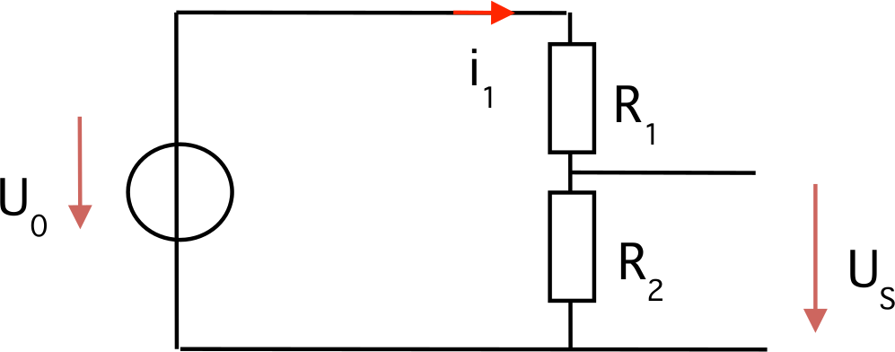 \(U_s = U_0 \cdot \frac{R_2}{R_1+R_2}\)
3 Semaine 3
3.1 Condensateur
\(Q = CU\)
\(i = \frac{dQ}{dt} = C \frac{dU}{dt}\)
Supposons \(i =\) constanste
\(\int\limits_{t_0}^{t_1} \frac{i dt}{C} = \int\limits_{U(t_0)}^{U(t_1)} dV = \frac{i(t_1-t_0}{C} = V(t_1)-V(t_0)\)
3.2 Inductance
\(\frac{U \cdot dt}{L}\)
Supposons \(U=constanste\)
\(\int\limits_{t_0}^{t_1} \frac{U dt}{L} = \int\limits_{i(t_0)}^{i(t_1)} di = \frac{U(t_1-t_0}{L} = i(t_1)-i(t_0)\)
3.3 Tableau récapitulatif
| Symbole | U (Tension) | I (Courant) |
|---|---|---|
| \(RI\) | \(\frac{U}{R}\) | |
| \(\frac{1}{C} \int I(t) dt\) \(+ k\) | \(C \frac{dU}{dt}\) | |
| \(L \frac{dI}{dt}\) | \(\frac{1}{L}\) \(\int U(t) dt\) \(+ k\) | |
3.5 Théorème de Millman
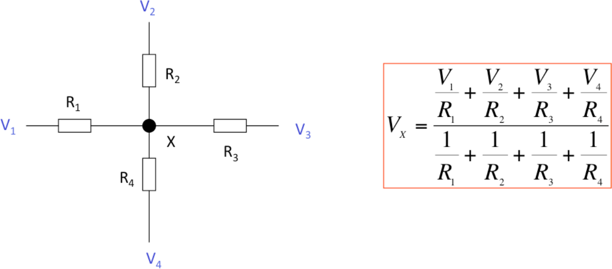
3.6 Simplification
3.6.1 Résistances
3.6.1.1 En série
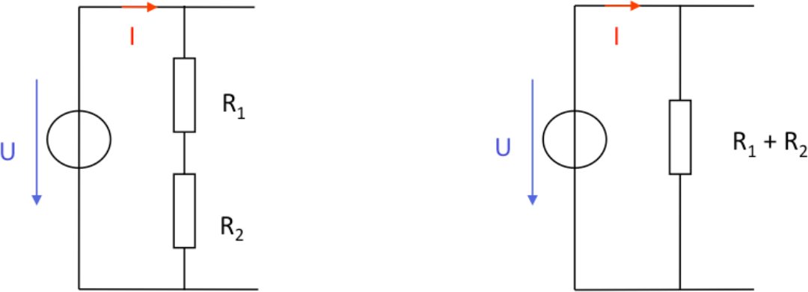
3.6.1.2 En parralèle
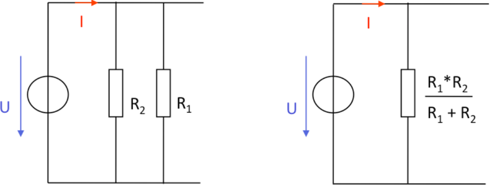
3.6.1.3 Théorème de Kennely
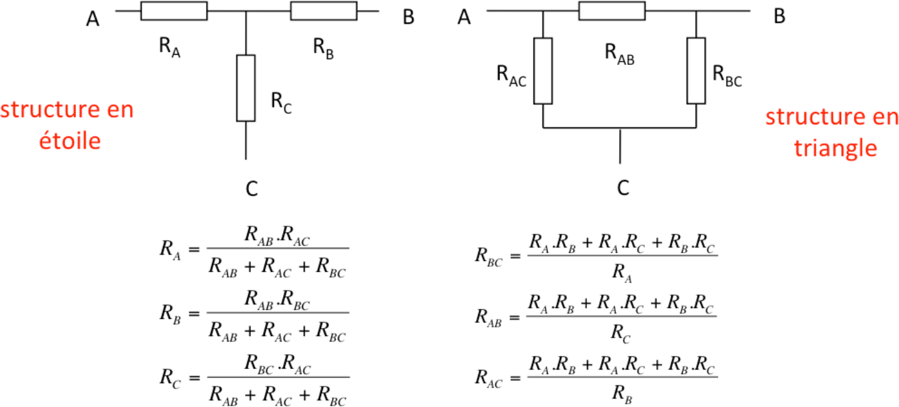
3.6.2 Inductances
3.6.2.1 En série
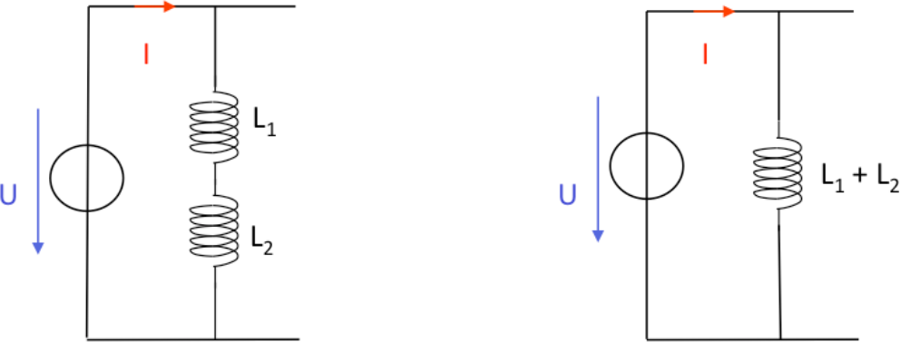
3.6.2.2 En parralèle
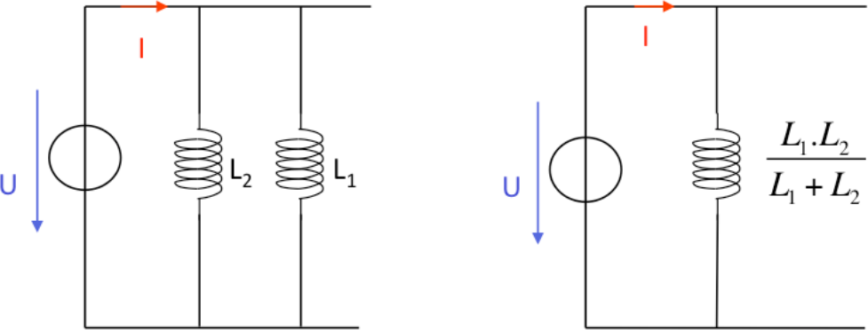
3.6.3 Capacités
3.6.3.1 En parralèle
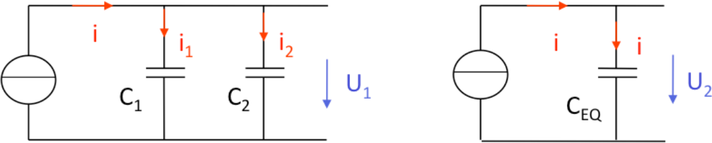
\(U_1 = U_2\) car si la source est identique, les équipotentielles le sont aussi
\(Q_T= Q_1+Q_2\)
\(i = i_1 + i_2\)
\(Q_T = C_{eq} \cdot U_2 = C_1 \cdot U_1 + C_2 \cdot U_2\)
\(C_{eq} = C_1 + C_2\)
3.6.3.2 En série
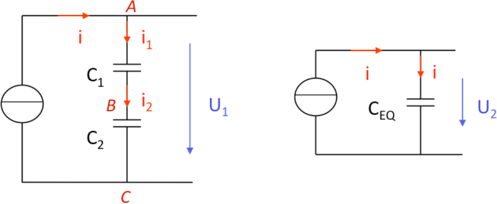
\(i_1 = i_2\)
\(\frac{1}{C_1} + \frac{1}{C_2} = \frac{1}{C_{eq}}\)
3.6.4 Diviseur résistif
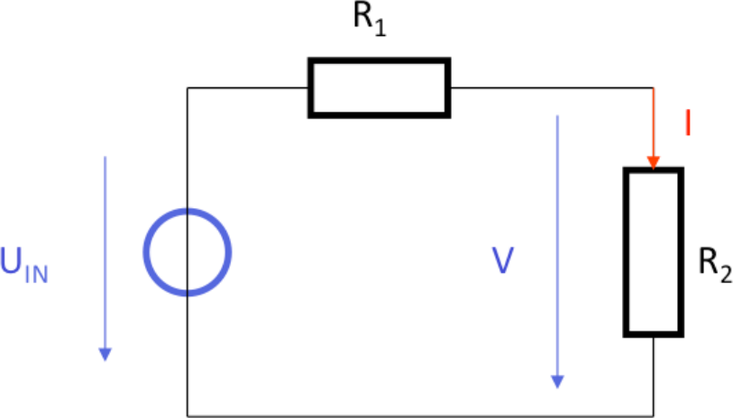
\(V = U_{IN} \cdot \frac{R_2}{R_1+R_2}\)
\(I = \frac{U_{IN}}{R_1+R_2}\)
3.6.5 Circuit RC
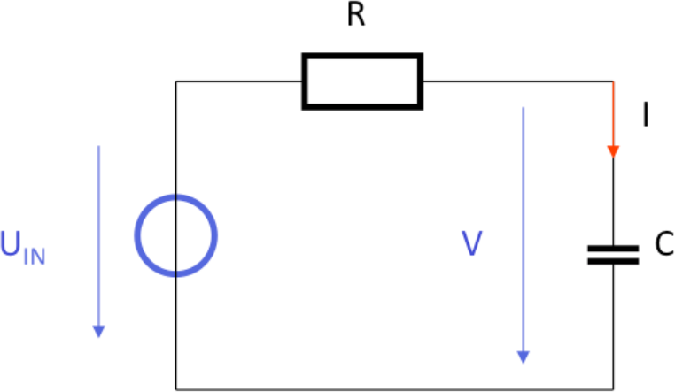
\(U_{IN} = R \cdot I(t) + \frac{1}{C}\int I(t) dt\)
\(I(t) = \frac{U_{IN}-V(t)}{R} = C \frac{dV}{dt}\) ou encore \(U_{IN} = V(t) + RC \frac{dV}{dt}\)
3.6.6 Circuit RLC
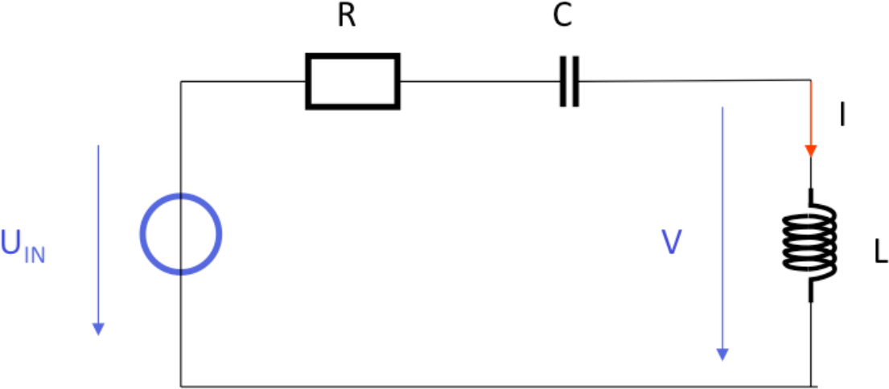
\(U_{IN} = R \cdot I(t) + \frac{1}{C} \int I(t) dt + L \frac{dI}{dt}\)
\(0 = I(t) + RC \frac{dI}{dt} + LC \frac{d^2 I}{dt^2}\)
4 Semaine 4
4.1 Terminologie
4.1.1 Le dipôle
4.1.2 Le tripôle
4.1.3 Le quadripôle
4.2 Techniques de simplification
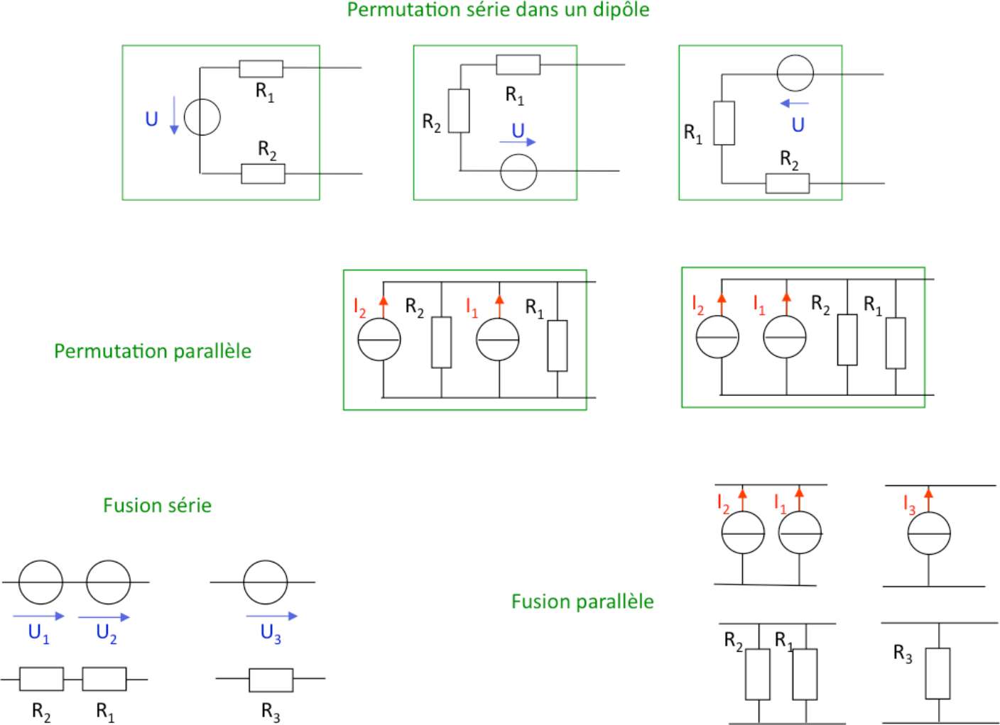
4.3 Théorème de Thévenin
La valeur de la résistance est obtenue:
- En éliminant les sources intérieures
- En évaluant la résistance vue depuis les bornes du dipôle
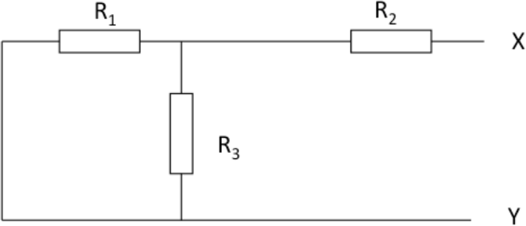
La valeur de la source de tension est obtenue:
- En laissant les bornes du dipôle à vide
- En mesurant la tension aux bornes du dipôle
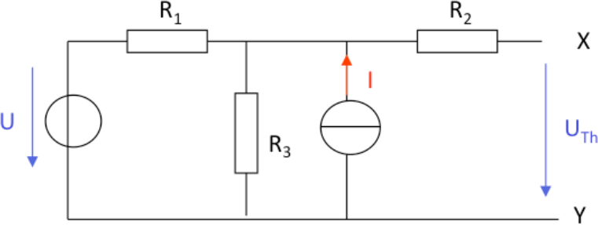
4.4 Théorème de Norton
La valeur de la source de courant est obtenue:
- En cout-circuitant les dornes du dipôle
- En mesurant le courant à travers le court-circuit
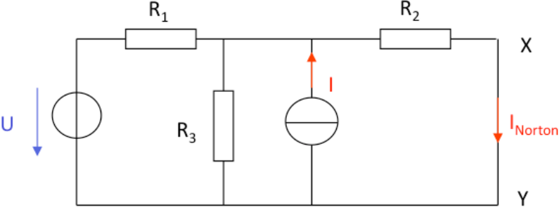
La valeur de la résistance est obtenue comme précédemment :
- En éliminant les source intérieures
- En évaluant la résistance vue depuis les bornes du dipôle
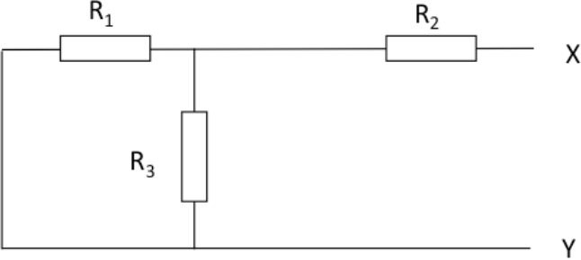